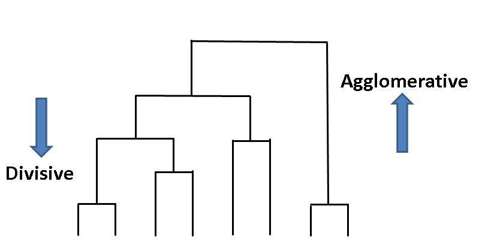
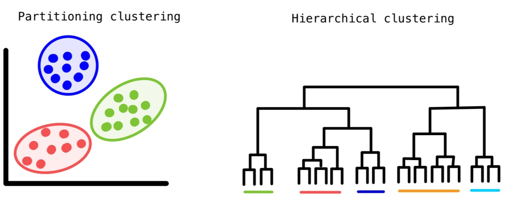
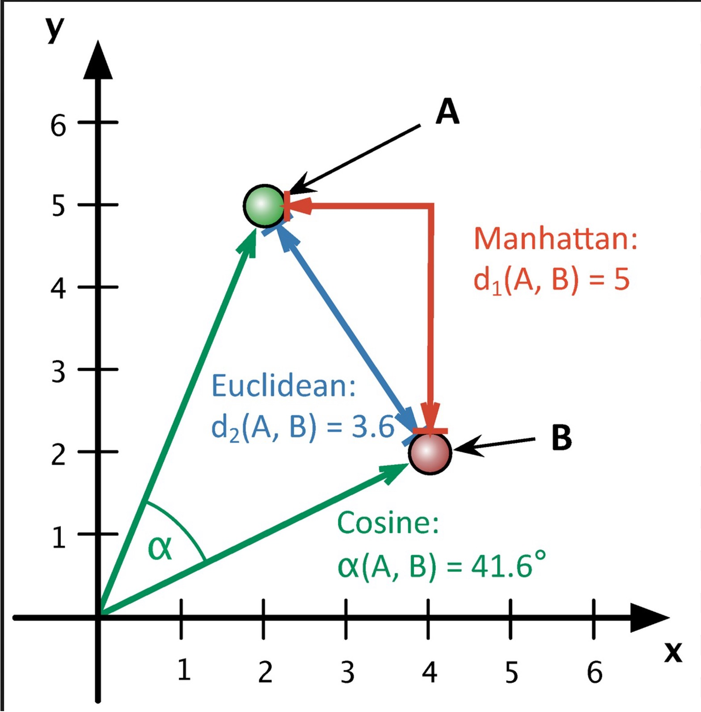
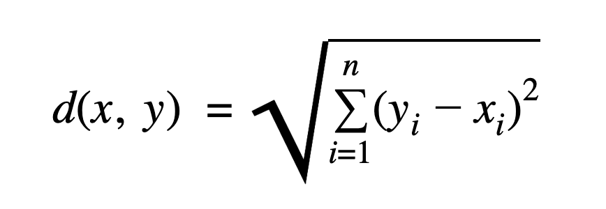

CLUSTERING
OVERVIEW:
Clustering is an unsupervised Machine Learning technique. It is used to group unlabelled data or data points such that similar data points will be in same cluster.

Goal:
- Maximize the Inter Cluster Distances
- Minimize the Intra Cluster Distances
Types of Clustering:
- Partitional Clustering:
- Hierarchical Clustering:
- Agglomerative:
- Divisive:
- Density based Clustering:
It divides the data points into non-overlapping groups. Every cluster must have atleast one data point.

Examples: K-Means, K-Medoids, CLARANS.
It determines the cluster assigments by building a hierarchy. There are two approaches: 
It is a Bottom up approach. In this approach, initially each data point is considered as an individual cluster. At each iteration, the similar clusters merge with other clusters until one cluster or K clusters are formed.
Example: AGNES (Agglomerative Nesting).
It is a Top down approach. In this approach, initially all the data points are considered as a single cluster and in each iteration, we separate the data points from the cluster which are not similar. Each data point which is separated is considered as an individual cluster. In the end there will be n clusters.
Example: DIANA (Divisive Analysis).
Examples: BIRCH (Balanced Iterative Reducing and Clustering using Hierarchies), ROCK (Robust Clustering), CHAMELON, etc.
It determines cluster assigments based on the density of data points in a region. No need to specify number of clusters for this method. It is efficient when clusters are irregular and contains noise and outliers.

Example: DBSCAN (Density Based Spacial Clustering of Applications with Noise)
Partitional Vs. Hierarchical Clustering:
| Aspect | Partitional Clustering | Hierarchical Clustering |
|---|---|---|
| Running Time | Typically faster, especially for large datasets | Generally slower, especially for large datasets |
| Input Parameters | Requires the number of clusters and initial cluster centers | Requires only a similarity measure |
| Resultant Clusters | Produces exactly k non-overlapping clusters | Produces a hierarchical structure of clusters |
| Interpretation | Provides a clear-cut division of clusters | Provides a meaningful and subjective division of clusters |
| Flexibility | Less flexible as the number of clusters needs to be determined beforehand | More flexible as it doesn't require specifying the number of clusters in advance |
| Scalability | More scalable for large datasets due to its partitioning approach | Less scalable for large datasets due to its hierarchical nature |
| Handling of Outliers | Sensitive to outliers, especially in partitional methods | Robust to outliers as it considers the entire dataset |
| Complexity | Non-hierarchical structure is simpler and easier to interpret | Hierarchical structure can be complex and harder to interpret |
| Application Suitability | Suitable for datasets with a predetermined number of clusters | Suitable for datasets with unknown or variable cluster numbers |
Distance methods Used:
- Eucledian Distance:
- Cosine Similarity:
Euclidean distance between two points in Euclidean space is the length of the line segment between them. It is Minkowski distance with p=2.It is used in KMeans (sklearn) by default. 
Cosine similarity quantifies the similarity between two non-zero vectors in an inner product space. It's computed as the cosine of the angle between the vectors, which is essentially the dot product of the vectors divided by the product of their lengths.

Linkage Method Used in Hierarchical Clustering:
-
Ward's Method:
It is also known as Ward's minimum variance method, is a hierarchical clustering algorithm that aims to minimize the variance when merging clusters. It operates by evaluating the increase in variance that would result from merging two clusters at each step of the clustering process. The clusters with the smallest increase in variance are merged together.
Dendrogram:
A dendrogram is a tree-like diagram commonly used in hierarchical clustering to illustrate the arrangement of the clusters formed during the clustering process. It visually represents the merging of clusters as the algorithm progresses from individual data points to a single cluster containing all data points. In a Dendrogram:
- Each leaf node represents an individual data point.
- The height of the horizontal lines connecting nodes represents the distance or dissimilarity between clusters or data points.
- The points where the lines are joined represent the merging of clusters.
- The vertical axis typically represents the distance or dissimilarity between clusters.
- The horizontal axis doesn't have a specific meaning and is often used just for visualization purposes.
PLAN
-
Firstly, city wise snowy weather data is required to cluster the cities by most snowy weather.
-
Normalize the features and then apply dimensionality reduction technique like PCA (Principal Component Analysis)
-
Applying K-Means clustering with Eucledian Distance and Hierarchical Clustering with Cosine Similarity.
-
Applying Elbow method and Silhouette method to determine optimal number of clusters
-
Analyze the resulting clusters to identify groups of cities with similar snowy weather patterns.
DATA PREPARATION
Clustering algorithms typically operate on quantitative data (numerical) and unlabelled data i.e, there's no need for predefined categories or classes. They group data points based on their similarity or distance in a multidimensional space defined by the features.
- Before Transformation:
- After Transformation:
- Principal Component Analysis:
- Filtering Quantitative Data:
- Clustering Dataset:
The below image shows the sample of data before transformation.

The below image shows the data after transformation by calculating most days of snowy weather.
The below image shows the sample of data after applying Principal Component Analysis with 3 components.
The below image shows the sample of quantitative and unlabelled data for clustering.
CODE
- K-Means Clustering (Python):
- Hierarchical Clustering (R):
RESULTS
- K-Means with Eucledian Distance:
- Elbow Method:
- Silhouette Method:
- Clustering cities by Snowy weather (5 Clusters)
- Clustering cities by Snowy weather (6 Clusters)
- Clustering cities by Snowy weather (8 Clusters)
- Clustering cities by Snowy weather (4 Clusters)
- Interactive Map with 5 Clusters by Snowy Weather
- Cities in different Clusters:
- Hierarchical Clustering with Ward.D method:
- Hierarchical Clustering with Cosine Similarity - Silhouette Method:
- Hierarchical Clustering with Cosine Similarity - Dendrogram (3 Clusters):
- Hierarchical Clustering with Eucledian Distance - Silhouette Method:
- Hierarchical Clustering with Eucledian Distance - Dendrogram (5 Clusters):
- K-Means vs Hierarchical clustering
Above Elbow curve represents Inertia (WCSS) values for different number of clusters. If the Inertia value is high, then the data points in the cluster are far or not similar i.e, intra cluster distance is more. From the above Elbow curve, the Elbow point is at k = 5. From Elbow point K, the rate of decrease of inertia or WCSS will not change significantly with increase in K. Therefore, optimal number of clusters using Elbow method is 5.
The above plot represents Silhouette scores for different number of clusters. If the Silouette score is high, then the data points are closer to their cluster than they are to the other clusters. From the above plot, Silhouette Score is maximum for k = 5 followed by k = 6 and 8.
The above 3D scatter plot depicts clusters of cities by snowy weather for optimal number of clusters (K = 5). The clusters are well seperated in this.

The above 3D Scatter plot depicts 6 clusters of cities by snowy weather. In this there is one cluster with only one city. So, k = 5 is optimal number of clusters.
The above 3D Scatter plot depicts 8 clusters of cities by snowy weather. In this also there is one cluster with only one city. So, k = 5 is optimal number of clusters.
The above 3D Scatter plot depicts 4 clusters of cities by snowy weather. In this the inter cluster distance is less and intra cluster distance is more. So, k = 5 is optimal number of clusters.
The above Interactive Map depicts 5 clusters of cities by snowy weather which upon hovering shows different weather features of the city.
The above image shows the list of cities in Five different clusters. Cities with most snowy weather Detroit, Minneapolis and Pittsburgh are in cluster 3 and Cities with least snowy weather like Houston and San Francisco are in cluster 4. KMeans clustered the data reasonably well.
From the above Silhouette method plot, the optimal number of clusters is k = 3 for Cosine Similarity.
The above Dendrogram depicts 3 clusters of cities by snowy weather using cosine similarity as similarity measure. The clusters are not meaningful with Cities with high/low Snowy Weather are not in same cluster.
From the above Silhouette method plot, the optimal number of clusters is k = 5 for Eucledian Distance.
The above Dendrogram depicts 5 clusters of cities by snowy weather using Euclidean distance as similarity measure. Cities with most snowy weather Detroit, Minneapolis and Pittsburgh are in cluster 3 and Cities with least snowy weather like Houston and San Francisco are in cluster 4. Hierarchical clustering with Eucledian distance clustered the data reasonably well.
From the above results, it is evident that K-Means and Hierarchical clustering with Eucledian distance gave similar results and has optimal number of clusters k = 5. But, Hierarchical Clustering with Cosine Similarity has optimal number of clusters k = 3 and gave different results.
CONCLUSION
The clustering of cities based on their snowy weather patterns provides valuable insights into the diverse winter climates observed across different regions. Grouping cities with similar snowfall characteristics allows for the identification of distinct patterns and trends in snowfall occurrence. For instance, cities clustered together may share similarities in the frequency, duration, and intensity of snowfall events, along with their impacts on daily life and infrastructure. This detailed understanding enables meteorologists and climatologists to improve the accuracy of weather predictions and warnings for affected areas by considering localized snowfall behaviors. Furthermore, the clustering method reveals the complex linkages between geographical features, meteorological conditions, and urban contexts that influence snowy weather patterns. Cities located in regions with similar topography, proximity to bodies of water, or latitude may exhibit similar snowfall patterns due to shared climatic effects. Understanding these underlying elements enables the development of more targeted and localised snow-management measures, such as snow removal operations, road maintenance protocols, and emergency response plans. Cities can optimise resource allocation, improve preparedness efforts, and reduce disruptions caused by winter weather disasters by adapting actions to the unique features of each clustered group.